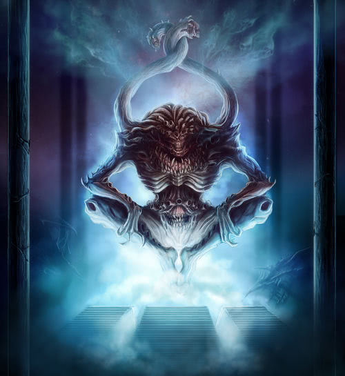
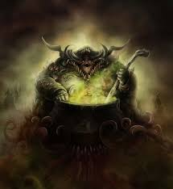

In there world of Warhammer, there exists a dimension birthed out of and inhabited by Chaos. The realm of Chaos is a dark and evil place, inhabited by demons and twisted beings corrupted by Chaos. It is the residence of the 4 great Chaos gods, Khorne, Tzeentch, Slaanesh, and Nurgle. They each control their own territory and dominion, however they are each always trying to gain more power over their brothers in the great game. The great game is the endless war and battle fought by the Chaos gods for control over all of Chaos and non-chaos as well as the being the singular Chaos god. They all balance each other out and alliances are made and broken quickly and rapidly.
Khorne is the Chaos god of battle, war, and blood. He represents the most primal and ancient emotion of anger. He represents the very act of killing. Killing and combat are what feeds his power and his thirst for blood will never be sated. He is generally the most powerful of the 4 chaos gods as death and killing are always ever present in the warhammer world. His demons are built after him, bloodthirsty, powerful, and willing to kill everything and anything. He sits in his brass citadel on top of his skull of thrones. A mountain of skulls sits underneath growing ever larger. His mortal followers are bloodthirsty berserkers, always hungry for battle. They chant out in his honor,
"BLOOD FOR THE BLOOD GOD!!! SKULLS FOR THE SKULL THRONE!!!"
Tzeentch, the changer of ways, is the chaos god of change, magic, and destiny. He represents the changing and evolving nature of chaos. Usually the second most powerful of the chaos gods, he schemes and plots for all eternity. Plans within plans, thousands of machinations thousands of millennia in the making all to achieve some unfathomable goal, if there is one. His followers serve Tzeentch in devious ways, they scheme and plot. They are gifted with awesome magic, so befitting for the god of magic. Everything that happens is all part of Tzeentch's machinations. All that happens is from Tzeentch and all the pieces will fall into place.
Just as planned
Nurgle is the chaos god of decay and disease. He is the embodiment of plague and and the evolution of life. All he touches is mutated, decayed, destroyed. In his realm he concocts plagues and poxes. Trying to create stronger and stronger diseases. He is a vile and disgusting being of grotesque nature. He is generally the 3rd strongest god, although there are times when plagues run rampant and the entire world is in decay and Nurgle becomes the most powerful being there is. His followers follow him fervently always spreading plagues and decay. They praise him for giving them life and showing them true meaning of life.
Praise the Plague Father!!!
Slaanesh, the Dark Prince, the Lord of Excess, is the chaos god of pleasure, decadence, and gratification. He represents the sinful and hedonistic desires of all beings. The excess desires of all, lust, greed, sloth, and much more. He is the weakest of the 4 gods however is more prevalent in more civilised races. He is the youngest and has a rather small domain in the chaos realm. He also has the potential to be the most powerful, as all creatures are driven forth by desires. Slaanesh plays and fuels the dark desires of all beings, men or otherwise. His potential is limitless, and is treated with contempt, fear, or disgust by the other gods.
The Dark Prince Desires!!!
The forces of chaos are many, mortal and immortal. The ruinous gods have demons and beasts of their won however, they also have mortal followers devoted to the dark ways. Most of them consist consist of barbarians to the north, pledging allegiance to the chaos gods in exchange for glory, power wealth, vanity, knowledge, whatever. The Norse, Kurgan, and Hung people are all savage, warlike race of humans that live in the far, frigid north. Here chaos runs rampant and the corrupting nature of chaos corrupts all. From Chaos marauders, to unholy Chaos warriors, to the few Chaos Chosen. Some curry enough favor with their patron god and become a Chaos champion. Only a select few become the vastly powerful demon princes, mortals who have ascended past all else.